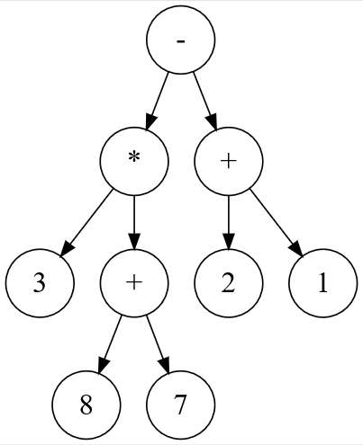
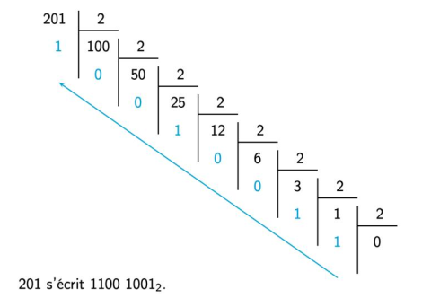
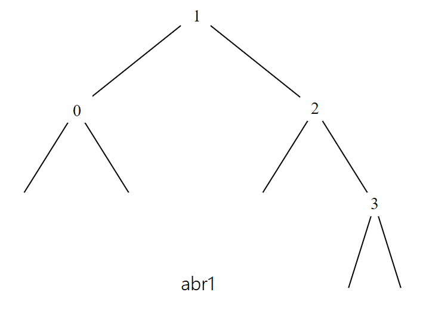
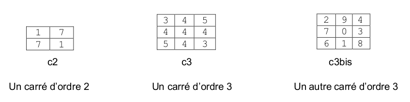
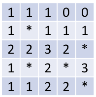

Épreuve Pratique BNS 2024
▶ Sujet 01
Exercice 01.1
Exercice 01.1
Dans cet exercice, un arbre binaire de caractères est stocké sous la forme d’un dictionnaire où les clefs sont les caractères des nœuds de l’arbre et les valeurs, pour chaque clef, la liste des caractères des fils gauche et droit du nœud.
On utilise la valeur '' pour représenter un fils vide.
Par exemple, l’arbre

est stocké dans
a = {'F':['B','G'], 'B':['A','D'], 'A':['',''], 'D':['C','E'], \
'C':['',''], 'E':['',''], 'G':['','I'], 'I':['','H'], \
'H':['','']}
Écrire une fonction récursive taille prenant en paramètres un arbre binaire arbre non vide
sous la forme d’un dictionnaire et un caractère lettre qui est la valeur du sommet de
l’arbre, et qui renvoie la taille de l’arbre à savoir le nombre total de nœuds.
On observe que, par exemple, arbre[lettre][0], respectivement
arbre[lettre][1], permet d’atteindre la clé du sous-arbre gauche, respectivement
droit, de l’arbre arbre de sommet lettre.
Exemple :
Exercice 01.2
Exercice 01.2
On considère l'algorithme de tri de tableau suivant : à chaque étape, on parcourt le sous- tableau des éléments non rangés et on place le plus petit élément en première position de ce sous-tableau.
Exemple avec le tableau : t = [41, 55, 21, 18, 12, 6, 25]
-
Étape 1 : on parcourt tous les éléments du tableau, on permute le plus petit élément avec le premier. Le tableau devient
t = [6, 55, 21, 18, 12, 41, 25] -
Étape 2 : on parcourt tous les éléments sauf le premier, on permute le plus petit élément trouvé avec le second.
Le tableau devient :t = [6, 12, 21, 18, 55, 41, 25]
Et ainsi de suite.
Le programme ci-dessous implémente cet algorithme.
Compléter le code de cette fonction de façon à obtenir :
▶ Sujet 02
Exercice 02.1
Exercice 02.1
On considère des chaînes de caractères contenant uniquement des majuscules et des carac-
tères * appelées mots à trous.
Par exemple INFO*MA*IQUE, ***I***E** et
*S* sont des mots à trous.
Programmer une fonction correspond qui :
- prend en paramètres deux chaînes de caractères
motetmot_a_trousoùmot_a_trousest un mot à trous comme indiqué ci-dessus, - renvoie :
Truesi on peut obtenirmoten remplaçant convenablement les caractères'*'demot_a_trous.Falsesinon.
Exemple :
Exercice 02.2
Exercice 02.2
On considère au plus 26 personnes A, B, C, D, E, F ... qui peuvent s'envoyer des messages avec deux règles à respecter :
- chaque personne ne peut envoyer des messages qu'à une seule personne (éventuellement elle-même),
- chaque personne ne peut recevoir des messages qu'en provenance d'une seule personne (éventuellement elle-même).
Voici un exemple - avec 6 personnes - de « plan d'envoi des messages » qui respecte les règles ci-dessus, puisque chaque personne est présente une seule fois dans chaque colonne :
- A envoie ses messages à E
- E envoie ses messages à B
- B envoie ses messages à F
- F envoie ses messages à A
- C envoie ses messages à D
- D envoie ses messages à C
Et le dictionnaire correspondant à ce plan d'envoi est le suivant :
plan_a = {'A':'E', 'B':'F', 'C':'D', 'D':'C', 'E':'B', 'F':'A'}
Un cycle est une suite de personnes dans laquelle la dernière est la même que la première.
Sur le plan d'envoi plan_a des messages ci-dessus, il y a deux cycles distincts : un premier
cycle avec A, E, B, F et un second cycle avec C et D.
En revanche, le plan d’envoi plan_b ci-dessous :
plan_b = {'A':'C', 'B':'F', 'C':'E', 'D':'A', 'E':'B', 'F':'D'}
comporte un unique cycle : A, C, E, B, F, D. Dans ce cas, lorsqu’un plan d’envoi comporte un unique cycle, on dit que le plan d’envoi est cyclique.
Pour savoir si un plan d'envoi de messages comportant N personnes est cyclique, on peut utiliser l'algorithme ci-dessous :
- on part d’un expéditeur (ici A) et on inspecte son destinataire dans le plan d'envoi,
- chaque destinataire devient à son tour expéditeur, selon le plan d’envoi, tant qu’on ne « retombe » pas sur l’expéditeur initial,
- le plan d’envoi est cyclique si on l’a parcouru en entier.
Compléter la fonction est_cyclique en respectant la spécification.
On rappelle que la fonction Python len permet d'obtenir la longueur d'un dictionnaire.
Exemples :
>>> est_cyclique({'A':'E', 'F':'A', 'C':'D', 'E':'B', 'B':'F', 'D':'C'})
False
>>> est_cyclique({'A':'E', 'F':'C', 'C':'D', 'E':'B', 'B':'F', 'D':'A'})
True
>>> est_cyclique({'A':'B', 'F':'C', 'C':'D', 'E':'A', 'B':'F', 'D':'E'})
True
>>> est_cyclique({'A':'B', 'F':'A', 'C':'D', 'E':'C', 'B':'F', 'D':'E'})
False
▶ Sujet 03
Exercice 03.1
Exercice 03.1
Écrire la fonction maximum_tableau, prenant en paramètre un tableau non vide de nombres tab (de type
list) et renvoyant le plus grand élément de ce tableau.
Exemples :
Exercice 03.2
Exercice 03.2
On dispose de chaînes de caractères contenant uniquement des parenthèses ouvrantes et fermantes.
Un parenthésage est correct si :
- le nombre de parenthèses ouvrantes de la chaîne est égal au nombre de parenthèses fermantes.
- en parcourant la chaîne de gauche à droite, le nombre de parenthèses déjà ouvertes doit être, à tout moment, supérieur ou égal au nombre de parenthèses déjà fermées.
Ainsi, ((()())(())) est un parenthésage correct.
Les parenthésages ())(() et (())(() sont, eux, incorrects.
On dispose du code de la classe Pile suivant :
On souhaite programmer une fonction bon_parenthesage qui prend en paramètre une chaîne de caractères ch formée de
parenthèses et renvoie True si la chaîne est bien parenthésée et False sinon.
Cette fonction utilise une pile et suit le principe suivant : en parcourant la chaîne de gauche à droite, si on trouve une parenthèse ouvrante, on l’empile au sommet de la pile et si on trouve une parenthèse fermante, on dépile (si possible) la parenthèse ouvrante stockée au sommet de la pile.
La chaîne est alors bien parenthésée si, à la fin du parcours, la pile est vide.
Elle est, par contre, mal parenthésée :
- si dans le parcours, on trouve une parenthèse fermante, alors que la pile est vide ;
- ou si, à la fin du parcours, la pile n’est pas vide.
Compléter le code de la fonction bon_parenthesage ci-dessous:
Exemples :
▶ Sujet 04
Exercice 04.1
Exercice 04.1
Programmer la fonction recherche, prenant en paramètres un tableau non vide tab (type list) d'entiers et un entier n, et qui renvoie l'indice de la dernière occurrence de l'élément cherché. Si l'élément n'est pas présent, la fonction renvoie None.
Exemples
Exercice 04.2
Exercice 04.2
On souhaite programmer une fonction donnant la distance la plus courte entre un point de départ et une liste de points. Les points sont tous à coordonnées entières. Les points sont donnés sous la forme d'un tuple de deux entiers. La liste des points à traiter est donc un tableau de tuples.
On rappelle que la distance entre deux points du plan de coordonnées \((x;y)\) et \((x';y')\) vérifie la formule :
Compléter le code des fonctions distance_carre et point_le_plus_proche fournies ci-dessous pour qu’elles répondent à leurs spécifications.
Exemples :
▶ Sujet 05
Exercice 05.1
Exercice 05.1
Écrire une fonction max_et_indice qui prend en paramètre un tableau non vide tab de
nombres entiers et qui renvoie la valeur du plus grand élément de ce tableau ainsi que
l’indice de sa première apparition dans ce tableau.
L’utilisation de la fonction native max n’est pas autorisée.
Exemples :
Exercice 05.2
Exercice 05.2
L’ordre des gènes sur un chromosome est représenté par un tableau ordre de n cases
d’entiers distincts deux à deux et compris entre 1 et n.
Par exemple, ordre = [5, 4, 3, 6, 7, 2, 1, 8, 9] dans le cas n = 9.
On dit qu’il y a un point de rupture dans ordre dans chacune des situations suivantes :
- la première valeur de
ordren’est pas 1 ; - l’écart entre deux gènes consécutifs n’est pas égal à 1 ;
- la dernière valeur de
ordren’est pas n.
Par exemple, si ordre = [5, 4, 3, 6, 7, 2, 1, 8, 9] avec n = 9, on a
- un point de rupture au début car 5 est différent de 1
- un point de rupture entre 3 et 6 (l’écart est de 3)
- un point de rupture entre 7 et 2 (l’écart est de 5)
- un point de rupture entre 1 et 8 (l’écart est de 7)
Il y a donc 4 points de rupture.
Compléter les fonctions Python est_un_ordre et nombre_points_rupture
proposées à la page suivante pour que :
-
la fonction
est_un_ordrerenvoieTruesi le tableau passé en paramètre représente bien un ordre de gènes de chromosome etFalsesinon ; -
la fonction
nombre_points_rupturerenvoie le nombre de points de rupture d’un tableau passé en paramètre représentant l’ordre de gènes d’un chromosome.
Exemples :
▶ Sujet 06
Exercice 06.1
Exercice 06.1
Écrire une fonction verifie qui prend en paramètre un tableau de valeurs numériques et qui renvoie True si ce tableau est trié dans l’ordre croissant, False sinon.
Un tableau vide est considéré comme trié.
Exemples :
Exercice 06.2
Exercice 06.2
On considère dans cet exercice l’élection d’un vainqueur à l’issue d’un vote. Les résultats
du vote sont stockés dans un tableau : chaque vote exprimé est le nom d’un ou d’une
candidate.
Par exemple, les résultats pourraient correspondre au tableau :
indiquant que 3 candidats ont obtenu au moins un vote chacun : A, B et C.
On cherche à déterminer le ou les candidats ayant obtenu le plus de suffrages. Pour cela, on propose d’écrire deux fonctions :
- La fonction
depouilledoit permettre de compter le nombre de votes exprimés pour chaque artiste. Elle prend en paramètre un tableau et renvoie le résultat dans un dictionnaire dont les clés sont les noms des issues et les valeurs le nombre de votes en leur faveur. - La fonction
vainqueursdoit désigner le nom du ou des gagnants. Elle prend en paramètre un dictionnaire non vide dont la structure est celle du dictionnaire renvoyé par la fonctiondepouilleet renvoie un tableau. Ce tableau peut donc contenir plusieurs éléments s’il y a des artistes ex- aequo. Compléter les fonctionsdepouilleetvainqueursci-après pour qu’elles renvoient les résultats attendus.
Exemples d’utilisation :
▶ Sujet 07
Exercice 07.1
Exercice 07.1
On considère dans cet exercice une représentation binaire d’un entier non signé en tant que tableau de booléens. Si
est un tel tableau, alors l’entier qu’il représente est \(2^6 +2^4 + 2^1 + 2^0 = 83\). Cette représentation consistant à placer en premier le booléen indiquant la puissance la plus élevée de 2 est dite big-endian ou grand-boutiste.
Écrire une fonction gb_vers_entier qui prend en paramètre un tel tableau et renvoie
l’entier qu’il représente.
Exemple :
Exercice 07.2
Exercice 07.2
La fonction tri_insertion suivante prend en argument un tableau tab et trie ce tableau en
utilisant la méthode du tri par insertion. Compléter cette fonction pour qu'elle réponde à la
spécification demandée.
On rappelle le principe du tri par insertion : on considère les éléments à trier un par un, le premier élément constituant, à lui tout seul, un tableau trié de longueur 1. On range ensuite le second élément pour constituer un tableau trié de longueur 2, puis on range le troisième élément pour avoir un tableau trié de longueur 3 et ainsi de suite...
A chaque étape, le premier élément du sous-tableau non trié est placé dans le sous-tableau des éléments déjà triés de sorte que ce sous-tableau demeure trié.
Le principe du tri par insertion est donc d'insérer à la n-ième itération, le n-ième élément à la bonne place.
Exemples :
▶ Sujet 08
Exercice 08.1
Exercice 08.1
Le codage par différence (delta encoding en anglais) permet de compresser un tableau d’entiers dont les valeurs sont proches les unes des autres. Le principe est de stocker la première donnée en indiquant pour chaque autre donnée sa différence avec la précédente plutôt que la donnée elle-même.
On se retrouve alors avec un tableau de données plus petit, nécessitant moins de place en mémoire. Cette méthode se révèle efficace lorsque les valeurs consécutives sont proches.
Programmer la fonction delta(liste) qui prend en paramètre un tableau non vide de nombres entiers
et qui renvoie un tableau contenant les valeurs entières compressées à l’aide cette technique.
Exemples :
Exercice 08.2
Exercice 08.2
Une expression arithmétique ne comportant que les quatre opérations +, −, ×, ÷ peut être représentée sous forme d’arbre binaire. Les nœuds internes sont des opérateurs et les feuilles sont des nombres. Dans un tel arbre, la disposition des nœuds joue le rôle des parenthèses que nous connaissons bien.

En parcourant en profondeur infixe l’arbre binaire ci-dessus, on retrouve l’expression notée habituellement :
La classe Expr ci-après permet d’implémenter une structure
d’arbre binaire pour représenter de telles expressions.
Compléter la méthode récursive infixe qui renvoie une chaîne de caractères contenant
des parenthèses représentant l’expression arithmétique sur laquelle on l’applique.
Exemples :
>>> a = Expr(Expr(None, 1, None), '+', Expr(None, 2, None))
>>> a.infixe()
'(1+2)'
>>> b = Expr(Expr(Expr(None, 1, None), '+', Expr(None, 2, None)), '*', Expr(Expr(None, 3, None), '+', Expr(None, 4, None)))
>>> b.infixe()
'((1+2)*(3+4))'
>>> e = Expr(Expr(Expr(None, 3, None), '*', Expr(Expr(None, 8, None), '+', Expr(None, 7, None))),
'-', Expr(Expr(None, 2, None), '+', Expr(None, 1, None)))
>>> e.infixe()
'((3*(8+7))-(2+1))'
▶ Sujet 09
Exercice 09.1
Exercice 09.1
On veut trier par ordre croissant les notes d’une évaluation qui sont des nombres entiers compris entre 0 et 10 (inclus).
Ces notes sont contenues dans un tableau notes_eval (type list)
Écrire une fonction effectif_notes prenant en paramètre le tableau notes_eval et
renvoyant un tableau de longueur 11 tel que la valeur d’indice i soit le nombre de notes
valant i dans le tableau notes_eval.
Écrire ensuite une fonction notes_triees prenant en paramètre le tableau des effectifs
des notes et renvoyant un tableau contenant les mêmes valeurs que notes_eval mais
triées dans l’ordre croissant.
Exemple :
- On peut ne pas effectuer ce test, car si
eff[i]vaut 0, on ne rentrera pas dans la bouclefor _ in range(0)et donc on ne touchera pas à la listetriees.
Exercice 09.2
Exercice 09.2
L’objectif de cet exercice est d’écrire deux fonctions récursives dec_to_bin et
bin_to_dec assurant respectivement la conversion de l’écriture décimale d’un nombre
entier vers son écriture en binaire et, réciproquement, la conversion de l’écriture en
binaire d’un nombre vers son écriture décimale.
Dans cet exercice, on s’interdit l’usage des fonctions Python bin et int.
L'exemple suivant montre comment obtenir l’écriture en binaire du nombre 25 :
\(25 = 2 \times 12 + 1\)
\(\phantom{25} = 2 \times (2 \times 6 + 0) + 1\)
\(\phantom{25} = 2 \times (2 \times (2 \times 3 + 0) + 0) + 1\)
\(\phantom{25} = 2 \times (2 \times (2 \times (2 \times 1+1) + 0) + 0) + 1\)
\(\phantom{25} = 2 \times (2 \times (2 \times (2 \times (2 \times 0 + 1)+1) + 0) + 0) + 1\)
\(\phantom{25} = 1 \times 2^4 + 1 \times 2^3 + 0 \times 2^2 + 0 \times 2^1 + 1 \times 2^0\)
L'écriture binaire de 25 est donc 11001.
0n rappelle également que :
a // 2renvoie le quotient de la division euclidienne deapar 2.a % 2renvoie le reste dans la division euclidienne deapar 2.
On indique enfin qu’en Python si mot = "informatique" alors :
mot[-1]renvoie'e', c’est-à-dire le dernier caractère de la chaîne de caractèresmot.mot[:-1]renvoie'informatiqu', c’est-à-dire l’ensemble de la chaîne de caractèresmotprivée de son dernier caractère.
Compléter, puis tester, les codes de deux fonctions ci-dessous.
On précise que la fonction récursive dec_to_bin prend en paramètre un nombre entier
et renvoie une chaîne de caractères contenant l’écriture en binaire du nombre passé en
paramètre.
Exemple :
La fonction récursive bin_to_dec prend en paramètre une chaîne de caractères
représentant l’écriture d’un nombre en binaire et renvoie l’écriture décimale de ce
nombre.
▶ Sujet 10
Exercice 10.1
Exercice 10.1
Dans cet exercice on cherche à calculer la moyenne pondérée d’un élève dans une matière donnée. Chaque note est associée à un coefficient qui la pondère.
Par exemple, si ses notes sont : 14 avec coefficient 3, 12 avec coefficient 1 et 16 avec coeffi- cient 2, sa moyenne pondérée sera donnée par
Écrire une fonction moyenne :
- qui prend en paramètre une liste notes non vide de tuples à deux éléments entiers
de la forme
(note, coefficient)(intoufloat) positifs ou nuls ; - et qui renvoie la moyenne pondérée des notes de la liste sous forme de flottant si la
somme des coefficients est non nulle,
Nonesinon.
Exemple :
Exercice 10.2
Exercice 10.2
 On travaille sur des dessins en noir et blanc obtenus à partir de pixels noirs et blancs :
La figure « cœur » ci-dessus va servir d’exemple.
On la représente par une grille de nombres, c’est-à-dire par une liste composée de sous-listes de même longueurs.
Chaque sous-liste représentera donc une ligne du dessin.
On travaille sur des dessins en noir et blanc obtenus à partir de pixels noirs et blancs :
La figure « cœur » ci-dessus va servir d’exemple.
On la représente par une grille de nombres, c’est-à-dire par une liste composée de sous-listes de même longueurs.
Chaque sous-liste représentera donc une ligne du dessin.
Dans le code ci-dessous, la fonction affiche permet d’afficher le dessin. Les pixels noirs
(1 dans la grille) seront représentés par le caractère "*" et les blancs (0 dans la grille) par
deux espaces.
La fonction liste_zoom prend en arguments une liste liste_depart et un entier k. Elle
renvoie une liste où chaque élément de liste_depart est dupliqué k fois.
La fonction dessin_zoom prend en argument la grille dessin et renvoie une grille où
toutes les lignes de dessin sont zoomées k fois et répétées k fois.
Compléter les fonctions liste_zoom et dessin_zoom du code suivant :
Exemples :
>>> coeur = [[0, 0, 0, 0, 0, 0, 0, 0, 0, 0, 0, 0, 0],
[0, 0, 0, 1, 1, 0, 0, 0, 1, 1, 0, 0, 0],
[0, 0, 1, 0, 0, 1, 0, 1, 0, 0, 1, 0, 0],
[0, 1, 0, 0, 0, 0, 1, 0, 0, 0, 0, 1, 0],
[0, 1, 0, 0, 0, 0, 0, 0, 0, 0, 0, 1, 0],
[0, 1, 0, 0, 0, 0, 0, 0, 0, 0, 0, 1, 0],
[0, 0, 1, 0, 0, 0, 0, 0, 0, 0, 1, 0, 0],
[0, 0, 0, 1, 0, 0, 0, 0, 0, 1, 0, 0, 0],
[0, 0, 0, 0, 1, 0, 0, 0, 1, 0, 0, 0, 0],
[0, 0, 0, 0, 0, 1, 0, 1, 0, 0, 0, 0, 0],
[0, 0, 0, 0, 0, 0, 1, 0, 0, 0, 0, 0, 0],
[0, 0, 0, 0, 0, 0, 0, 0, 0, 0, 0, 0, 0]]
>>> affiche(coeur)
* * * *
* * * *
* * *
* *
* *
* *
* *
* *
* *
*
>>> affiche(dessin_zoom(coeur,2))
* * * * * * * *
* * * * * * * *
* * * * * * * *
* * * * * * * *
* * * * * *
* * * * * *
* * * *
* * * *
* * * *
* * * *
* * * *
* * * *
* * * *
* * * *
* * * *
* * * *
* * * *
* * * *
* *
* *
>>> liste_zoom([1,2,3],3)
[1, 1, 1, 2, 2, 2, 3, 3, 3]
▶ Sujet 11
Exercice 11.1
Exercice 11.1
Dans cet exercice, on considère des phrases composées de mots.
-
On appelle « mot » une chaîne de caractères composée avec des caractères choisis parmi les 26 lettres minuscules ou majuscules de l'alphabet,
-
On appelle phrase une chaîne de caractères :
- composée avec un ou plusieurs mots séparés entre eux par un seul
caractère espace
' ', - se finissant :
- soit par un point
'.'qui est alors collé au dernier mot, - soit par un point d'exclamation
'!'ou d'interrogation'?'qui est alors séparé du dernier mot par un seul caractère espace' '.
- soit par un point
- composée avec un ou plusieurs mots séparés entre eux par un seul
caractère espace
Voici deux exemples de phrases :
- 'Cet exercice est simple.'
- 'Le point d exclamation est separe !'
Après avoir remarqué le lien entre le nombre de mots et le nombres de caractères espace
dans une phrase, programmer une fonction nombre_de_mots qui prend en paramètre une
phrase et renvoie le nombre de mots présents dans cette phrase.
Exercice 11.2
Exercice 11.2
Un arbre binaire de recherche est soit vide, représenté en Python par la valeur None, soit un nœud, contenant une étiquette et deux sous-arbres gauche et droit et représenté par une instance de la classe Noeud donnée ci-dessous.
On considère ici que les étiquettes des nœuds sont des entiers et que les arbres binaires de recherche considérés ne contiennent pas de doublons.
Compléter la méthode récursive inserer afin qu’elle permette d’insérer une clé dans
l’arbre binaire de recherche non vide sur lequel on l’appelle.
Voici un exemple d'utilisation :
▶ Sujet 12
Exercice 12.1
Exercice 12.1
Écrire une fonction tri_selection qui prend en paramètre un tableau tab de nombres
entiers (type list) et qui le modifie afin qu’il soit trié par ordre croissant.
On utilisera l’algorithme suivant :
- on recherche le plus petit élément du tableau, en le parcourant du rang 0 au dernier rang, et on l’échange avec l’élément d’indice 0 ;
- on recherche ensuite le plus petit élément du tableau restreint du rang 1 au dernier rang, et on l’échange avec l’élément d’indice 1 ;
- on continue de cette façon jusqu’à ce que le tableau soit entièrement trié.
Exemple :
Exercice 12.2
Exercice 12.2
Le jeu du « plus ou moins » consiste à deviner un nombre entier choisi entre 1 et 99.
Une élève de NSI décide de le coder en langage Python de la manière suivante :
- le programme génère un nombre entier aléatoire compris entre 1 et 99 ;
- si la proposition de l’utilisatrice est plus petite que le nombre cherché, l’utilisatrice en est avertie. Elle peut alors en tester un autre ;
- si la proposition de l’utilisatrice est plus grande que le nombre cherché, l’utilisatrice en est avertie. Elle peut alors en tester un autre ;
- si l’utilisatrice trouve le bon nombre en 10 essais ou moins, elle gagne ;
- si l’utilisatrice a fait plus de 10 essais sans trouver le bon nombre, elle perd.
La fonction randint est utilisée.
Si a et b sont des entiers tels que a <= b, randint(a,b) renvoie un
nombre entier compris entre a et b.
Compléter le code ci-dessous et le tester :
▶ Sujet 13
Exercice 13.1
Exercice 13.1
Écrire une fonction recherche qui prend en paramètres elt un nombre entier et tab
un tableau de nombres entiers (type list), et qui renvoie l’indice de la première occurrence de elt dans tab si elt est dans tab et None sinon.
L’objectif de cet exercice est de parcourir un tableau, il est interdit d’utiliser la méthode
index des listes Python.
Exemples :
Exercice 13.2
Exercice 13.2
On considère la fonction insere ci-dessous qui prend en argument un tableau tab d’entiers triés par ordre croissant et un entier a.
Cette fonction crée et renvoie un nouveau tableau à partir de celui fourni en paramètre en y
insérant la valeur a de sorte que le tableau renvoyé soit encore trié par ordre croissant. Les
tableaux seront représentés sous la forme de listes Python.
Compléter la fonction insere ci-dessus.
Exemples :
▶ Sujet 14
Exercice 14.1
Exercice 14.1
Écrire une fonction min_et_max qui prend en paramètre un tableau de nombres tab non vide, et qui renvoie la plus petite et la plus grande valeur du tableau sous la
forme d’un dictionnaire à deux clés min et max.
Les tableaux seront représentés sous forme de liste Python.
L’utilisation des fonctions natives min, max et sorted, ainsi que la méthode sort n’est pas
autorisée.
Exemples :
Exercice 14.2
Exercice 14.2
On dispose d’une classe Carte permettant de créer des objets modélisant des cartes à
jouer.
Compléter la classe Paquet_de_cartes suivante en respectant les spécifications
données dans les chaînes de documentation.
Ajouter une assertion dans la méthode recuperer_carte afin de vérifier que le paramètre pos
est correct.
On rappelle que l’instruction
permet de vérifier que la condition est vraie. Si ce n’est pas le cas, le programme s’arrête et affiche le message d’erreur fourni.
Exemple :
>>> jeu = Paquet_de_cartes()
>>> carte1 = jeu.recuperer_carte(20)
>>> carte1.recuperer_valeur() + " de " + carte1.recuperer_couleur()
"8 de coeur"
>>> carte2 = jeu.recuperer_carte(0)
>>> carte2.recuperer_valeur() + " de " + carte2.recuperer_couleur()
"As de pique"
>>> carte3 = jeu.recuperer_carte(52)
AssertionError : paramètre pos invalide
▶ Sujet 15
Exercice 15.1
Exercice 15.1
Écrire une fonction moyenne qui prend en paramètre un tableau non vide de nombres
flottants et qui renvoie la moyenne des valeurs du tableau. Les tableaux seront
représentés sous forme de liste Python.
Exemples :
Exercice 15.2
Exercice 15.2
On considère la fonction binaire.
Cette fonction prend en paramètre un entier positif a en
écriture décimale et renvoie son écriture binaire sous la forme d’une chaine de caractères.
L’algorithme utilise la méthode des divisions euclidiennes successives comme l’illustre l’exemple ci-après.

Compléter le code de la fonction binaire.
Exemples :
▶ Sujet 16
Exercice 16.1
Exercice 16.1
Écrire une fonction ecriture_binaire_entier_positif qui prend en paramètre un
entier positif n et renvoie une une chaine de caractère correspondant à l‘écriture binaire de n.
On rappelle que :
- l’écriture binaire de 25 est 11001 car \(25 = 1 \times 2^4 + 1 \times 2^3 + 0 \times 2^2 + 0 \times 2^1 + 1 \times 2^0\) ;
n % 2vaut 0 ou 1 selon quenest pair ou impair ;n // 2donne le quotient de la division euclidienne denpar 2.
Il est interdit dans cet exercice d’utiliser la fonction bin de Python.
Exemples :
Exercice 16.2
Exercice 16.2
La fonction tri_bulles prend en paramètre une liste tab d’entiers (type list) et le modifie pour le trier par ordre croissant.
Le tri à bulles est un tri en place qui commence par placer le plus grand élément en
dernière position en parcourant le tableau de gauche à droite et en échangeant au passage
les éléments voisins mal ordonnés (si la valeur de l’élément d’indice i a une valeur
strictement supérieure à celle de l’indice i + 1, ils sont échangés). Le tri place ensuite
en avant-dernière position le plus grand élément du tableau privé de son dernier élément
en procédant encore à des échanges d’éléments voisins. Ce principe est répété jusqu’à
placer le minimum en première position.
Exemple : pour trier le tableau [7, 9, 4, 3] :
- première étape : 7 et 9 ne sont pas échangés, puis 9 et 4 sont échangés, puis 9 et
3 sont échangés, le tableau est alors
[7, 4, 3, 9] - deuxième étape : 7 et 4 sont échangés, puis 7 et 3 sont échangés, le tableau est
alors
[4, 3, 7, 9] - troisième étape : 4 et 3 sont échangés, le tableau est alors
[3, 4, 7, 9]
Compléter le code Python ci-dessous qui implémente la fonction tri_bulles.
Exemples :
▶ Sujet 17
Exercice 17.1
Exercice 17.1
Écrire une fonction Python appelée nb_repetitions qui prend en paramètres un
élément elt et un tableau tab (type list) et renvoie le nombre de fois où l’élément apparaît dans le tableau.
Exemples :
Exercice 17.2
Exercice 17.2
Pour rappel, la conversion d’un nombre entier positif en binaire peut s’effectuer à l’aide des divisions successives comme illustré ici :

Voici une fonction Python basée sur la méthode des divisions successives permettant de convertir un nombre entier positif en binaire :
Compléter la fonction binaire
Exemples :
▶ Sujet 18
Exercice 18.1
Exercice 18.1
Programmer la fonction multiplication, prenant en paramètres deux nombres entiers relatifs
n1 et n2, et qui renvoie le produit de ces deux nombres.
Les seules opérations arithmétiques autorisées sont l’addition et la soustraction.
Exemples :
Exercice 18.2
Exercice 18.2
Soit tab un tableau non vide d'entiers triés dans l'ordre croissant et n un entier.
La fonction chercher ci-dessous doit renvoyer un indice où la valeur n
apparaît dans tab si cette valeur y figure et None sinon.
Les paramètres de la fonction sont :
tab, le tableau dans lequel s'effectue la recherche ;x, l'entier à chercher dans le tableau ;i, l'indice de début de la partie du tableau où s'effectue la recherche ;j, l'indice de fin de la partie du tableau où s'effectue la recherche.
L’algorithme demandé est une recherche dichotomique récursive.
Recopier et compléter le code de la fonction chercher suivante :
Exemples :
▶ Sujet 19
Exercice 19.1
Exercice 19.1
On rappelle que :
- le nombre \(a^n\) est le nombre \(a \times a \times a \times \dots \times a\), où le facteur \(a\) apparaît \(n\) fois,
- en langage Python, l’instruction
t[-1]permet d’accéder au dernier élément du tableaut.
Dans cet exercice, l’opérateur ** et la fonction pow ne sont pas autorisés.
Programmer en langage Python une fonction liste_puissances qui prend en arguments
un nombre entier a, un entier strictement positif n et qui renvoie la liste de ses puissances
\(\rm{[a^1, a^2, ..., a^n]}\).
Programmer également une fonction liste_puisssances_borne qui prend en
arguments un nombre entier a supérieur ou égal à 2 et un entier borne, et qui renvoie la
liste de ses puissances, à l’exclusion de \(\rm{a^0}\), strictement inférieures à borne.
Exemples :
Exercice 19.2
Exercice 19.2
On affecte à chaque lettre de l'alphabet un code selon le tableau ci-dessous :
| A | B | C | D | E | F | G | H | I | J | K | L | M |
|---|---|---|---|---|---|---|---|---|---|---|---|---|
| 1 | 2 | 3 | 4 | 5 | 6 | 7 | 8 | 9 | 10 | 11 | 12 | 13 |
| N | O | P | Q | R | S | T | U | V | W | X | Y | Z |
|---|---|---|---|---|---|---|---|---|---|---|---|---|
| 14 | 15 | 16 | 17 | 18 | 19 | 20 | 21 | 22 | 23 | 24 | 25 | 26 |
Cette table de correspondance est stockée dans un dictionnaire dico où les clés sont les
lettres de l’alphabet et les valeurs les codes correspondants.
dico = {"A": 1, "B": 2, "C": 3, "D": 4, "E": 5, "F": 6,
"G": 7, "H": 8, "I": 9, "J": 10, "K": 11, "L": 12,
"M": 13, "N": 14, "O": 15, "P": 16, "Q": 17,
"R": 18, "S": 19, "T": 20, "U": 21, "V": 22,
"W": 23, "X": 24, "Y": 25, "Z": 26}
Pour un mot donné, on détermine d’une part son code alphabétique concaténé, obtenu par la juxtaposition des codes de chacun de ses caractères, et d’autre part, son code additionné, qui est la somme des codes de chacun de ses caractères.
Par ailleurs, on dit que ce mot est « parfait » si le code additionné divise le code concaténé.
Exemples :
-
Pour le mot
"PAUL", le code concaténé est la chaîne'1612112', soit l’entier 1 612 112. Son code additionné est l’entier 50 car 16 + 1 + 21 + 12 = 50. 50 ne divise pas l’entier 1 612 112 ; par conséquent, le mot"PAUL"n’est pas parfait. -
Pour le mot
"ALAIN", le code concaténé est la chaîne'1121914', soit l’entier 1 121 914. Le code additionné est l’entier 37 car 1 + 12 + 1 + 9 + 14 = 37. 37 divise l’entier 1 121 914 ; par conséquent, le mot"ALAIN"est parfait.
Compléter la fonction codes_parfait située à la page suivante et qui prend en paramètre
un mot en majuscule et renvoie un triplet constitué du code additionné, du code concaténé
et d’un booléen indiquant si le mot est parfait ou non.
On rappelle que pour tester si un entier a divise un entier b, on utilise l’opérateur modulo
b % a qui renvoie le reste de la division euclidienne de b par a. Sib % a vaut 0, alors a divise b.
Exemples :
▶ Sujet 20
Exercice 20.1
Exercice 20.1
Dans cet exercice les tableaux sont représentés par des listes Python (type list).
Écrire en python deux fonctions :
lancerde paramètren, un entier positif, qui renvoie un tableau denentiers obtenus aléatoirement entre 1 et 6 (1 et 6 inclus) ;paire_6de paramètretab, un tableau de n entiers compris entre 1 et 6 et qui renvoie un booléen égal àTruesi le nombre de 6 est supérieur ou égal à 2,Falsesinon.
On pourra utiliser la fonction randint(a,b) du module random pour laquelle la
documentation officielle est la suivante :
random.randint(a, b)
Renvoie un entier aléatoire N tel que a <=N <= b.
Exemples :
Exercice 20.2
Exercice 20.2
On considère une image en 256 niveaux de gris que l’on représente par une grille de nombres, c’est-à-dire une liste composée de sous-listes toutes de longueurs identiques.
La largeur de l’image est donc la longueur d’une sous-liste et la hauteur de l’image est le nombre de sous-listes.
Chaque sous-liste représente une ligne de l’image et chaque élément des sous-listes est un entier compris entre 0 et 255, représentant l’intensité lumineuse du pixel.
Le négatif d’une image est l’image constituée des pixels x_n tels que
x_n + x_i = 255 où x_i est le pixel correspondant de l’image initiale.
Compléter le programme suivant :
Exemples :
>>> img=[[20, 34, 254, 145, 6], [23, 124, 237, 225, 69],
[197, 174, 207, 25, 87], [255, 0, 24, 197, 189]]
>>> nombre_lignes(img)
4
>>> nombre_colonnes(img)
5
>>> negatif(img)
[[235, 221, 1, 110, 249], [232, 131, 18, 30, 186],
[58, 81, 48, 230, 168], [0, 255, 231, 58, 66]]
>>> binaire(img,120)
[[0, 0, 1, 1, 0],[0, 1, 1, 1, 0],[1, 1, 1, 0, 0],[1, 0, 0, 1, 1]]
▶ Sujet 21
Exercice 21.1
Exercice 21.1
Écrire une fonction recherche_motif qui prend en paramètre une chaîne de caractères
motif non vide et une chaîne de caractères texte et qui renvoie la liste des positions de
motif dans texte. Si motif n’apparaît pas, la fonction renvoie une liste vide.
Exemples:
Exercice 21.2
Exercice 21.2
Dans cet exercice, on considère un graphe non orienté représenté sous forme de listes d’adjacence. On suppose que les sommets sont numérotés de 0 à n-1.
Ainsi, le graphe suivant:

sera représenté par la liste d’adjacence suivante:
adj = [[1, 2], [0, 3], [0], [1], [5], [4]]
On souhaite déterminer les sommets accessibles depuis un sommet donné dans le graphe. Pour cela, on va procéder à un parcours en profondeur du graphe.
Compléter la fonction suivante.
Exemples :
▶ Sujet 22
Exercice 22.1
Exercice 22.1
Écrire une fonction recherche_indices_classement qui prend en paramètres un
entier elt et un tableau d’entiers tab, et qui renvoie trois listes :
- la première liste contient les indices des valeurs du tableau
tabstrictement inférieures àelt; - la deuxième liste contient les indices des valeurs du tableau
tabégales àelt; - la troisième liste contient les indices des valeurs du tableau
tabstrictement supérieures àelt.
Exemples :
>>> recherche_indices_classement(3, [1, 3, 4, 2, 4, 6, 3, 0])
([0, 3, 7], [1, 6], [2, 4, 5])
>>> recherche_indices_classement(3, [1, 4, 2, 4, 6, 0])
([0, 2, 5], [], [1, 3, 4])
>>>recherche_indices_classement(3, [1, 1, 1, 1])
([0, 1, 2, 3], [], [])
>>> recherche_indices_classement(3, [])
([], [], [])
Exercice 22.2
Exercice 22.2
Une professeure de NSI décide de gérer les résultats de sa classe sous la forme d’un dictionnaire :
- les clefs sont les noms des élèves ;
- les valeurs sont des dictionnaires dont les clefs sont les types d’épreuves sous forme de chaîne de caractères et les valeurs sont les notes obtenues associées à leurs coefficients dans une liste.
Avec :
resultats = {'Dupont': {
'DS1': [15.5, 4],
'DM1': [14.5, 1],
'DS2': [13, 4],
'PROJET1': [16, 3],
'DS3': [14, 4]
},
'Durand': {
'DS1': [6 , 4],
'DS2': [8, 4],
'PROJET1': [9, 3],
'IE1': [7, 2],
'DS3': [12, 4]
}
}
L’élève dont le nom est Durand a ainsi obtenu au DS2 la note de 8 avec un coefficient 4.
Le professeur crée une fonction moyenne qui prend en paramètre le nom d’un de ses
élèves et renvoie sa moyenne arrondie au dixième. Si l’élève n’a pas de notes, on considère
que sa moyenne est nulle. Si le nom donné n’est pas dans les résultats, la fonction renvoie
None.
Compléter le code de la professeure ci-dessous :
Exemples :
▶ Sujet 23
Exercice 23.1
Exercice 23.1
Dans cet exercice, on considère des arbres binaires de recherche qui sont :
- soit l’arbre vide identifié par
None; - soit un nœud, contenant une clé et deux sous-arbres gauche et droit et représenté
par un triplet
(g, v, d)oùgetdsont les sous-arbres gauche et droit etvla clé.

Ainsi, l’arbre binaire de recherche abr1 ci-
contre est créé par le code python ci-
dessous
Écrire une fonction récursive insertion_abr(a, cle) qui prend en paramètres une
clé cle et un arbre binaire de recherche a, et qui renvoie un arbre binaire de recherche
dans lequel cle a été insérée.
Dans le cas où cle est déjà présente dans a, la fonction renvoie l’arbre a inchangé.
Résultats à obtenir :
Exercice 23.2
Exercice 23.2
On dispose d’un ensemble d’objets dont on connaît, pour chacun, la masse. On
souhaite ranger l’ensemble de ces objets dans des boites identiques de telle
manière que la somme des masses des objets contenus dans une boîte ne dépasse
pas la capacité c de la boîte. On souhaite utiliser le moins de boîtes possibles pour
ranger cet ensemble d’objets.
Pour résoudre ce problème, on utilisera un algorithme glouton consistant à placer chacun des objets dans la première boîte où cela est possible.
Par exemple, pour ranger dans des boîtes de capacité c = 5 un ensemble de trois
objets dont les masses sont représentées en Python par la liste [1, 5, 2], on
procède de la façon suivante :
- Le premier objet, de masse 1, va dans une première boite.
- Le deuxième objet, de masse 5, ne peut pas aller dans la même boite que le premier objet car cela dépasserait la capacité de la boite. On place donc cet objet dans une deuxième boîte.
- Le troisième objet, de masse 2, va dans la première boîte.
On a donc utilisé deux boîtes de capacité c = 5 pour ranger les 3 objets.
Compléter la fonction Python empaqueter(liste_masses, c) suivante pour
qu’elle renvoie le nombre de boîtes de capacité c nécessaires pour empaqueter un
ensemble d’objets dont les masses sont contenues dans la liste liste_masses.
Exemples :
▶ Sujet 24
Exercice 24.1
Exercice 24.1
Un arbre binaire est soit vide, représenté en Python par la valeur None, soit un nœud
représenté par un triplet (g, x, d) où x est l’étiquette du nœud et g et d sont les sous-arbres gauche et droit.
On souhaite écrire une fonction parcours_largeur qui prend en paramètre un arbre
binaire et qui renvoie la liste des étiquettes des nœuds de l’arbre parcourus en largeur.
Exemples :
Exercice 24.2
Exercice 24.2
On considère un tableau non vide de nombre entiers, positifs ou négatifs, et on souhaite déterminer la plus grande somme possible de ses éléments consécutifs.
Par exemple, dans le tableau [1, -2, 3, 10, -4, 7, 2, -5], la plus grande
somme est 18 obtenue en additionnant les éléments 3, 10, -4, 7, 2.
Pour cela, on va résoudre le problème par programmation dynamique. Si on note tab le
tableau considéré et i un indice dans ce tableau, on se ramène à un problème plus simple : déterminer la plus grande somme possible de ses éléments consécutifs se terminant à
l’indice i.
Si on connait la plus grande somme possible de ses éléments consécutifs se terminant à
l’indice i-1, on peut déterminer la plus grande somme possible de ses éléments consécutifs
se terminant à l’indice i :
- soit on obtient une plus grande somme en ajoutant
tab[i]à cette somme précédente ; - soit on commence une nouvelle somme à partir de
tab[i].
Remarque : les sommes considérées contiennent toujours au moins un terme.
Compléter la fonction somme_max ci-dessous qui réalise cet algorithme.
Exemples :
Merci à N. Maier pour la correction
▶ Sujet 25
Exercice 25.1
Exercice 25.1
Écrire une fonction recherche_min qui prend en paramètre un tableau de nombres tab, et qui renvoie l'indice de la première occurrence du minimum de ce tableau. Les tableaux seront représentés sous forme de liste Python.
Exemples :
Exercice 25.2
Exercice 25.2
On considère la fonction separe ci-dessous qui prend en argument un tableau tab dont
les éléments sont des 0 et des 1 et qui sépare les 0 des 1 en plaçant les 0 en début de
tableau et les 1 à la suite.
Compléter la fonction separe ci-dessus.
Exemples :
>>> separe([1, 0, 1, 0, 1, 0, 1, 0])
[0, 0, 0, 0, 1, 1, 1, 1]
>>> separe([1, 0, 0, 0, 1, 1, 0, 1, 1, 0, 1, 0, 1, 1, 1, 0])
[0, 0, 0, 0, 0, 0, 0, 1, 1, 1, 1, 1, 1, 1, 1, 1]
Description d’étapes effectuées par la fonction separe sur le tableau ci-dessous, les caractères ^ indiquent les cases pointées par les indices gauche et droite :
-
Etape 1 : on regarde la première case, qui contient un 1 : ce 1 va aller dans la seconde partie du tableau final et on l’échange avec la dernière case. Il est à présent bien positionné : on ne prend plus la dernière case en compte.
-
Etape 2 : on regarde à nouveau la première case, qui contient maintenant un 0 : ce 0 va aller dans la première partie du tableau final et est bien positionné : on ne prend plus la première case en compte.
-
Etape 3 : on regarde la seconde case, qui contient un 0 : ce 0 va aller dans la première partie du tableau final et est bien positionné : on ne prend plus la seconde case en compte.
-
Etape 4 : on regarde la troisième case, qui contient un 1 : ce 1 va aller dans la seconde partie du tableau final et on l’échange avec l’avant-dernière case. Il est à présent bien positionné : on ne prend plus l’avant-dernière case en compte.
Et ainsi de suite...
tab = [0, 0, 0, 0, 1, 1, 1, 1]
▶ Sujet 26
Exercice 26.1
Exercice 26.1
Écrire une fonction ajoute_dictionnaires qui prend en paramètres deux
dictionnaires d1 et d2 dont les clés sont des nombres et renvoie le dictionnaire d défini de
la façon suivante :
- Les clés de
dsont celles ded1et celles ded2réunies. - Si une clé est présente dans les deux dictionnaires
d1etd2, sa valeur associée dans le dictionnairedest la somme de ses valeurs dans les dictionnairesd1etd2. - Si une clé n’est présente que dans un des deux dictionnaires, sa valeur associée
dans le dictionnaire
dest la même que sa valeur dans le dictionnaire où elle est présente.
Exemples :
Exercice 26.2
Exercice 26.2
On considère une piste carrée qui contient 4 cases par côté. Les cases sont numérotées de 0 inclus à 12 exclu comme ci-dessous :

L’objectif de l’exercice est d’implémenter le jeu suivant :
Au départ, le joueur place son pion sur la case 0. A chaque coup, il lance un dé équilibré à six faces et avance son pion d’autant de cases que le nombre indiqué par le dé (entre 1 et 6 inclus) dans le sens des aiguilles d’une montre.
Par exemple, s’il obtient 2 au premier lancer, il pose son pion sur la case 2 puis s’il obtient 6 au deuxième lancer, il le pose sur la case 8, puis s’il obtient à nouveau 6, il pose le pion sur la case 2.
Le jeu se termine lorsque le joueur a posé son pion sur toutes les cases de la piste.
Compléter la fonction nombre_coups ci-dessous de sorte qu’elle renvoie le nombre de
lancers aléatoires nécessaires pour terminer le jeu.
Proposer ensuite quelques tests pour en vérifier le fonctionnement.
▶ Sujet 27
Exercice 27.1
Exercice 27.1
Écrire une fonction couples_consecutifs qui prend en paramètre un tableau de
nombres entiers tab non vide (type list), et qui renvoie la liste Python (éventuellement vide) des couples d'entiers consécutifs successifs qu'il peut y avoir dans tab.
Exemples :
Exercice 27.2
Exercice 27.2
Soit une image binaire représentée dans un tableau à 2 dimensions. Les éléments
M[i][j], appelés pixels, sont égaux soit à 0 soit à 1.
Une composante d’une image est un sous-ensemble de l’image constitué uniquement de
1 et de 0 qui sont côte à côte, soit horizontalement soit verticalement.
Par exemple, les composantes de
 sont
sont

On souhaite, à partir d’un pixel égal à 1 dans une image M, donner la valeur val à tous
les pixels de la composante à laquelle appartient ce pixel.
La fonction colore_comp1 prend pour paramètre une image M (représentée par une liste de
listes), deux entiers i et j et une valeur entière val. Elle met à la valeur val tous les pixels de la composante du pixel
M[i][j] s’il vaut 1 et ne fait rien sinon.
Par exemple, colore_comp1(M, 2, 1, 3) donne

Compléter le code récursif de la fonction colore_comp1 donné ci-dessous :
 dans le sujet original, les commentaires sur la direction de propagation sont erronés
dans le sujet original, les commentaires sur la direction de propagation sont erronés
Exemple :
▶ Sujet 28
Exercice 28.1
Exercice 28.1
On s’intéresse à la suite d’entiers définie par :
- les deux premières valeurs sont égales à 1 ;
- ensuite, chaque valeur est obtenue en faisant la somme des deux valeurs qui la précè- dent.
La troisième valeur est donc \(1+1 = 2\), la quatrième est \(1+2 = 3\), la cinquième est \(2+3 = 5\), la sixième est \(3 + 5 = 8\), et ainsi de suite.
Cette suite d’entiers est connue sous le nom de suite de Fibonacci.
Écrire en Python une fonction fibonacci qui prend en paramètre un entier n supposé
strictement positif et qui renvoie le terme d’indice n de cette suite.
Exemples :
Version récursive :
Version programmation dynamique bottom-up:
Version programmation dynamique top-down avec mémoïsation:
On peut constater que la version récursive échoue à calculer fibonacci(45), alors que les deux autres versions le font quasi-immédiatement.
Exercice 28.2
Exercice 28.2
On considère la fonction eleves_du_mois prenant en paramètres eleves et notes deux
tableaux de même longueur, le premier contenant le nom des élèves et le second, des
entiers positifs désignant leur note à un contrôle de sorte que eleves[i] a obtenu la
note notes[i].
Cette fonction renvoie le couple constitué de la note maximale attribuée et des noms des élèves ayant obtenu cette note regroupés dans un tableau.
Ainsi, l’instruction eleves_du_mois(['a', 'b', 'c', 'd'], [15, 18, 12, 18]) renvoie
le couple (18, ['b', 'd']).
Compléter ce code.
Exemples :
▶ Sujet 29
Exercice 29.1
Exercice 29.1
Écrire une fonction moyenne(notes) qui renvoie la moyenne pondérée des
résultats contenus dans le tableau notes, non vide, donné en paramètre. Ce
tableau contient des couples (note, coefficient) dans lesquels :
noteest un nombre de type flottant (float) compris entre 0 et 20 ;coefficientest un nombre entier strictement positif.
Ainsi l’expression moyenne([(15.0,2),(9.0,1),(12.0,3)]) devra renvoyer 12.5.
\(\dfrac{2 \times 15 + 1 \times 9 + 3 \times 12 }{2+1+3}=12,5\)
Exercice 29.2
Exercice 29.2
On cherche à déterminer les valeurs du triangle de Pascal (Figure 1).
Dans le triangle de Pascal, chaque ligne commence et se termine par le nombre 1. Comme l’illustre la Figure 2, on additionne deux valeurs successives d’une ligne pour obtenir la valeur qui se situe sous la deuxième valeur.

Compléter les fonctions ligne_suivante et pascal ci-dessous. La fonction
ligne_suivante prend en paramètre une liste d’entiers ligne correspondant à une
ligne du triangle de Pascal et renvoie la liste correspondant à la ligne suivante du triangle
de Pascal. La fonction pascal prend en paramètre un entier n et l’utilise pour construire
le triangle de Pascal ayant n+1 lignes sous la forme d’une liste de listes.
Exemples:
▶ Sujet 30
Exercice 30.1
Exercice 30.1
Programmer la fonction fusion prenant en paramètres deux tableaux non vides tab1 et tab2
(type list) d'entiers, chacun dans l’ordre croissant, et renvoyant un tableau trié dans l’ordre croissant et contenant l’ensemble des valeurs de tab1 et tab2.
Exemples :
Exercice 30.2
Exercice 30.2
Le but de cet exercice est d’écrire une fonction récursive traduire_romain qui prend
en paramètre une chaîne de caractères, non vide, représentant un nombre écrit en
chiffres romains et qui renvoie son écriture décimale.
Les chiffres romains considérés sont : I, V, X, L, C, D et M. Ils représentent respectivement les nombres 1, 5, 10, 50, 100, 500, et 1000 en base dix.
On dispose d’un dictionnaire romains dont les clés sont les caractères apparaissant
dans l’écriture en chiffres romains et les valeurs sont les nombres entiers associés en
écriture décimale :
romains = {"I":1, "V":5, "X":10, "L":50, "C":100, "D":500, "M":1000}
Le code de la fonction traduire_romain fournie repose sur le
principe suivant :
-
la valeur d’un caractère est ajoutée à la valeur du reste de la chaîne si ce caractère a une valeur supérieure (ou égale) à celle du caractère qui le suit ;
-
la valeur d’un caractère est retranchée à la valeur du reste de la chaîne si ce caractère a une valeur strictement inférieure à celle du caractère qui le suit.
Ainsi, XIV correspond au nombre 10 + 5 - 1 puisque :
-
la valeur de X (10) est supérieure à celle de I (1), on ajoute donc 10 à la valeur du reste de la chaîne, c’est-à-dire IV ;
-
la valeur de I (1) est strictement inférieure à celle de V (5), on soustrait donc 1 à la valeur du reste de la chaîne, c’est-à-dire V.
On rappelle que pour priver une chaîne de caractères de son premier caractère, on utilisera l’instruction :
nom_de_variable[1:]
Par exemple, si la variable mot contient la chaîne "CDI", mot[1:] renvoie "DI".
Exemples :
▶ Sujet 31
Exercice 31.1
Exercice 31.1
Programmer la fonction multiplication, prenant en paramètres deux nombres entiers relatifs
n1 et n2, et qui renvoie le produit de ces deux nombres.
Les seules opérations autorisées sont l’addition et la soustraction.
Exercice 31.2
Exercice 31.2
On s’intéresse dans cet exercice à la recherche dichotomique dans un tableau trié d’entiers. Compléter la fonction suivante en respectant la spécification.
Exemples :
▶ Sujet 32
Exercice 32.1
Exercice 32.1
L'opérateur « ou exclusif » entre deux bits renvoie 0 si les deux bits sont égaux et 1 s'ils sont différents. Il est symbolisé par le caractère ⊕. Ainsi :
- 0 ⊕ 0 = 0
- 0 ⊕ 1 = 1
- 1 ⊕ 0 = 1
- 1 ⊕ 1 = 0
Écrire une fonction ou_exclusif qui prend en paramètres deux tableaux de 0 ou de 1 de
même longueur et qui renvoie un tableau où l’élément situé à position i est le résultat, par
l’opérateur « ou exclusif », des éléments à la position i des tableaux passés en paramètres.
Si on ne connait pas la fonction native ^ qui fait le «ou exclusif» de deux entiers en Python, on peut la recoder :
Le code devient alors :
Exercice 32.2
Exercice 32.2
Dans cet exercice, on appelle carré d’ordre \(n\) un tableau de \(n\) lignes et \(n\) colonnes dont chaque case contient un entier naturel.
Exemples : 
Un carré est dit semimagique lorsque les sommes des éléments situés sur chaque ligne, chaque colonne sont égales.
-
Ainsi c2 et c3 sont semimagiques car la somme de chaque ligne, chaque colonne et chaque diagonale est égale à 8 pour c2 et 12 pour c3.
-
Le carre c3bis n'est pas semimagique car la somme de la première ligne est égale à 15 alors que celle de la deuxième ligne est égale à 10.
La classe Carre ci-après contient des méthodes qui permettent de manipuler des carrés.
-
La méthode constructeur crée un carré sous forme d’un tableau à deux dimensions à partir d’une liste d’entiers, et d’un ordre.
-
La méthode
affichepermet d’afficher le carré créé.
Exemple :
>>> lst_c3 = [3, 4, 5, 4, 4, 4, 5, 4, 3]
>>> c3 = Carre(lst_c3, 3)
>>> c3.affiche()
[3, 4, 5]
[4, 4, 4]
[5, 4, 3]
Compléter la méthode est_semimagique qui renvoie True si le carré est semimagique,
False sinon.
Tester la méthode est_semimagique sur les carrés c2, c3 et c3bis.
Tests avec :
▶ Sujet 33
Exercice 33.1
Exercice 33.1
Programmer une fonction renverse, prenant en paramètre une chaîne de caractères mot et renvoie cette chaîne de caractères en ordre inverse.
Exemple :
Exercice 33.2
Exercice 33.2
Un nombre premier est un nombre entier naturel qui admet exactement deux diviseurs distincts entiers et positifs : 1 et lui-même.
Le crible d’Ératosthène permet de déterminer les nombres premiers plus petit qu’un certain
nombre n fixé.
On considère pour cela un tableau tab de nbooléens, initialement tous égaux à True, sauf
tab[0] et tab[1] qui valent False, 0 et 1 n’étant pas des nombres premiers.
On parcourt alors ce tableau de gauche à droite.
Pour chaque indice i :
-
si
tab[i]vautTrue: le nombreiest premier et on donne la valeurFalseà toutes les cases du tableau dont l’indice est un multiple dei, à partir de2*i(c’est-à-dire2*i,3*i...). -
si
tab[i]vautFalse: le nombrein’est pas premier et on n’effectue aucun changement sur le tableau.
On dispose de la fonction crible, incomplète et donnée ci-dessous, prenant en paramètre un
entier n strictement positif et renvoyant un tableau contenant tous les nombres premiers plus
petits que n.
Exemples :
▶ Sujet 34
Exercice 34.1
Exercice 34.1
Le nombre d’occurrences d’un caractère dans une chaîne de caractère est le nombre d’apparitions de ce caractère dans la chaîne.
Exemples :
- le nombre d’occurrences du caractère
‘o’dans‘bonjour’est 2 ; - le nombre d’occurrences du caractère
‘b’dans‘Bébé’est 1 ; - le nombre d’occurrences du caractère
‘B’dans‘Bébé’est 1 ; - le nombre d’occurrences du caractère
‘ ‘dans‘Hello world !’est 2.
On cherche les occurrences des caractères dans une phrase. On souhaite stocker ces occurrences dans un dictionnaire dont les clefs seraient les caractères de la phrase et les valeurs le nombre d’occurrences de ces caractères.
Par exemple : avec la phrase 'Hello world !' le dictionnaire est le suivant :
{'H': 1,'e': 1,'l': 3,'o': 2,' ': 2,'w': 1,'r': 1,'d': 1,'!': 1}
L’ordre des clefs n’a pas d’importance.
Écrire une fonction nbr_occurrences prenant comme paramètre une chaîne de
caractères chaine et renvoyant le dictionnaire des nombres d’occurrences des
caractères de cette chaîne.
Exercice 34.2
Exercice 34.2
La fonction fusion prend deux tableaux tab1, tab2 (type list) d’entiers triés par ordre
croissant et les fusionne en un tableau trié tab12 qu’elle renvoie.
Compléter le code de la fonction fusion ci-dessous.
Compléter le code.
Exemple :
▶ Sujet 35
Exercice 35.1
Exercice 35.1
On a relevé les valeurs moyennes annuelles des températures à Paris pour la période
allant de 2013 à 2019. Les résultats ont été récupérés sous la forme de deux tableaux (de type
list) : l’un pour les températures, l’autre pour les années :
t_moy = [14.9, 13.3, 13.1, 12.5, 13.0, 13.6, 13.7]
annees = [2013, 2014, 2015, 2016, 2017, 2018, 2019]
Écrire la fonction annee_temperature_minimale qui prend en paramètres ces deux
tableaux et qui renvoie la plus petite valeur relevée au cours de la période et l’année correspondante.
On suppose que la température minimale est atteinte une seule fois.
Exemple :
Exercice 35.2
Exercice 35.2
Un mot palindrome peut se lire de la même façon de gauche à droite ou de droite à gauche : kayak, radar, et non sont des mots palindromes.
De même certains nombres ont des écritures décimales qui sont des palindromes : 33, 121, 345543.
L’objectif de cet exercice est d’obtenir un programme Python permettant de tester si un nombre est un nombre palindrome.
Pour remplir cette tâche, on vous demande de compléter le code des trois fonctions ci- dessous qui s’appuient les unes sur les autres :
inverse_chaine: qui renvoie une chaîne de caractères inversée ;est_palindrome: qui teste si une chaîne de caractères est un palindrome ;est_nbre_palindrome: qui teste si un nombre est un palindrome.
Compléter le code des trois fonctions ci-dessous.
Exemples :
▶ Sujet 36
Exercice 36.1
Exercice 36.1
Écrire une fonction occurrences(caractere, chaine) qui prend en paramètres
caractere, une chaîne de caractère de longueur 1, et chaine, une chaîne de caractères.
Cette fonction renvoie le nombre d’occurrences de caractere dans chaine, c’est-à-dire
le nombre de fois où caractere apparaît dans chaine.
Exemples :
Exercice 36.2
Exercice 36.2
On s’intéresse à un algorithme récursif qui permet de rendre la monnaie à partir d’une liste donnée de valeurs de pièces et de billets.
Le système monétaire est donné sous forme d’une liste valeurs = [100, 50, 20,
10, 5, 2, 1]. On suppose que les pièces et billets sont disponibles sans limitation.
On cherche à donner la liste des valeurs à rendre pour une somme donnée en argument. L’algorithme utilisé est de type glouton.
Compléter le code Python ci-dessous de la fonction rendu_glouton qui implémente cet
algorithme et renvoie la liste des pièces à rendre.
On devra obtenir :
▶ Sujet 37
Exercice 37.1
Exercice 37.1
Programmer la fonction moyenne prenant en paramètre un tableau d'entiers tab (de type list) qui renvoie la moyenne de ses éléments si le tableau est non vide. Proposer une
façon de traiter le cas où le tableau passé en paramètre est vide.
Dans cet exercice, on s’interdira d’utiliser la fonction Python sum.
Exemples :
Exercice 37.2
Exercice 37.2
On considère un tableau d'entiers tab (de type list) dont les éléments sont des 0 ou des 1). On se propose de trier ce tableau selon l'algorithme suivant : à chaque étape du tri, le tableau est constitué de trois zones consécutives, la première ne contenant que des 0,
la seconde n'étant pas triée et la dernière ne contenant que des 1.
Au départ, les zones ne contenant que des 0 et des 1 sont vides.
| Zone de 0 | Zone non triée | Zone de 1 |
Tant que la zone non triée n'est pas réduite à un seul élément, on regarde son premier élément :
- si cet élément vaut 0, on considère qu'il appartient désormais à la zone ne contenant que des 0 ;
- si cet élément vaut 1, il est échangé avec le dernier élément de la zone non triée et on considère alors qu’il appartient à la zone ne contenant que des 1.
Dans tous les cas, la longueur de la zone non triée diminue de 1.
Compléter la fonction tri suivante :
Exemple :
▶ Sujet 38
Exercice 38.1
Exercice 38.1
Écrire une fonction indices_maxi qui prend en paramètre un tableau non vide de nombre
entiers tab, représenté par une liste Python et qui renvoie un tuple (maxi, indices)
où :
maxiest le plus grand élément du tableautab;indicesest une liste Python contenant les indices du tableautaboù apparaît ce plus grand élément.
Exemple :
Exercice 38.2
Exercice 38.2
Cet exercice utilise des piles qui seront représentées par des listes Python.
Si pile est une pile, alors pile == [] indique si la pile est vide, pile.pop() retire
et renvoie le sommet de la pile et pile.append(v) ajoute la valeur v au sommet de la
pile.
Si on considère qu’une fonction manipule une pile, elle ne peut pas utiliser d’autres opéra- tions que celles décrites ci-dessus.
On cherche à écrire une fonction positifs qui prend une pile de nombres entiers en
paramètre et qui renvoie une nouvelle pile contenant les entiers positifs de la pile initiale,
dans le même ordre, quitte à modifier la pile initiale.
Pour cela, on va également écrire une fonction renverse qui prend une pile en paramètre
et qui renvoie une nouvelle pile contenant les mêmes éléments que la pile initiale, mais
dans l’ordre inverse. Cette fonction sera également amenée à modifier la pile passée en
paramètre.
Compléter le code Python des fonctions renverse et positifs ci-après
Exemple :
▶ Sujet 39
Exercice 39.1
Exercice 39.1
Écrire une fonction recherche qui prend en paramètres elt un nombre entier et tab
un tableau de nombres entiers (type list ), et qui renvoie l’indice de la dernière occurrence de elt dans tab si elt est dans tab et None sinon.
Exemples :
Exercice 39.2
Exercice 39.2
On définit une classe gérant une adresse IPv4.
On rappelle qu’une adresse IPv4 est une adresse de longueur 4 octets, notée en décimale
à point, en séparant chacun des octets par un point. On considère un réseau privé avec
une plage d’adresses IP de 192.168.0.0 à 192.168.0.255.
On considère que les adresses IP saisies sont valides.
Les adresses IP 192.168.0.0 et 192.168.0.255 sont des adresses réservées.
Le code ci-dessous implémente la classe AdresseIP.
adresse1, adresse2,
adresse3 avec respectivement les arguments suivants :
'192.168.0.1', '192.168.0.2', '192.168.0.0'
Vérifier que :
▶ Sujet 40
Exercice 40.1
Exercice 40.1
On considère des tables, c’est-à-dire des tableaux de dictionnaires ayant tous les mêmes
clés, qui contiennent des enregistrements relatifs à des animaux hébergés dans un refuge.
Les attributs des enregistrements sont 'nom', 'espece', 'age', 'enclos'.
Voici un exemple d'une telle table :
animaux = [ {'nom':'Medor', 'espece':'chien', 'age':5, 'enclos':2},
{'nom':'Titine', 'espece':'chat', 'age':2, 'enclos':5},
{'nom':'Tom', 'espece':'chat', 'age':7, 'enclos':4},
{'nom':'Belle', 'espece':'chien', 'age':6, 'enclos':3},
{'nom':'Mirza', 'espece':'chat', 'age':6, 'enclos':5}]
Programmer une fonction selection_enclos qui :
- prend en paramètres :
- une table
animauxcontenant des enregistrements relatifs à des animaux (comme dans l'exemple ci-dessus), - un numéro d'enclos
num_enclos;
- une table
- renvoie une table contenant les enregistrements de
animauxdont l'attribut'enclos'estnum_enclos.
Exemples avec la table animaux ci-dessus :
Exercice 40.2
Exercice 40.2
On considère des tableaux de nombres dont tous les éléments sont présents exactement trois fois à la suite, sauf un élément qui est présent une unique fois et que l'on appelle « l'intrus ». Voici quelques exemples :
tab_a = [3, 3, 3, 9, 9, 9, 1, 1, 1, 7, 2, 2, 2, 4, 4, 4, 8, 8, 8, 5, 5, 5]
#l'intrus est 7
tab_b = [8, 5, 5, 5, 9, 9, 9, 18, 18, 18, 3, 3, 3]
#l'intrus est 8
tab_c = [5, 5, 5, 1, 1, 1, 0, 0, 0, 6, 6, 6, 3, 8, 8, 8]
#l'intrus est 3
- pour les indices multiples de 3 situés strictement avant l'intrus, l'élément correspondant et son voisin de droite sont égaux,
- pour les indices multiples de 3 situés après l'intrus, l'élément correspondant et son voisin de droite - s'il existe - sont différents.
Ce que l'on peut observer ci-dessous en observant les valeurs des paires de voisins marquées par des caractères ^ :
[3, 3, 3, 9, 9, 9, 1, 1, 1, 7, 2, 2, 2, 4, 4, 4, 8, 8, 8, 5, 5, 5]
^ ^ ^ ^ ^ ^ ^ ^ ^ ^ ^ ^ ^ ^ ^
0 3 6 9 12 15 18 21
Dans des listes comme ceux ci-dessus, un algorithme récursif pour trouver l'intrus consiste
alors à choisir un indice i multiple de 3 situé approximativement au milieu des indices parmi
lesquels se trouve l'intrus.
Puis, en fonction des valeurs de l'élément d'indice i et de son voisin de droite, à appliquer
récursivement l'algorithme à la moitié droite ou à la moitié gauche des indices parmi lesquels
se trouve l'intrus.
Par exemple, si on s’intéresse à l’indice 12, on voit les valeurs 2 et 4 qui sont différentes : l’intrus est donc à gauche de l’indice 12 (indice 12 compris)
En revanche, si on s’intéresse à l’indice 3, on voit les valeurs 9 et 9 qui sont identiques : l’intrus est donc à droite des indices 3-4-5, donc à partir de l’indice 6.
Compléter la fonction récursive trouver_intrus proposée page suivante qui met
en œuvre cet algorithme.
Exemples :
▶ Sujet 41
Exercice 41.1
Exercice 41.1
Un arbre binaire est soit vide, représenté en Python par la valeur None, soit un nœud,
contenant une étiquette et deux sous-arbres gauche et droit et représenté par une instance
de la classe Noeud donnée ci-dessous.
class Noeud:
def __init__(self, etiquette, gauche, droit):
self.v = etiquette
self.gauche = gauche
self.droit = droit
L’arbre ci-dessus sera donc implémenté de la manière suivante :
Écrire une fonction récursive taille prenant en paramètre un arbre a et qui renvoie la
taille de l’arbre que cette instance implémente.
Écrire de même une fonction récursive hauteur prenant en paramètre un arbre a et qui
renvoie la hauteur de l’arbre que cette instance implémente.
On considère que la hauteur d’un arbre vide est -1 et la taille d’un arbre vide est 0.
Exemples :
Exercice 41.2
Exercice 41.2
On rappelle que les tableaux sont représentés par des listes en Python du type list.
Le but de cet exercice est d’écrire une fonction ajoute qui prend en paramètres trois
arguments indice, element et tab et renvoie un tableau tab_ins dans lequel les
éléments sont ceux du tableau tab avec, en plus, l’élément element à l’indice indice.
On considère que les variables indice et element sont des entiers positifs et que les
éléments de tab sont également des entiers.
En réalisant cette insertion, Les éléments du tableau tab dont les indices sont supérieurs
ou égaux à indice apparaissent décalés vers la droite dans le tableau tab_ins.
Si indice est égal au nombre d’éléments du tableau tab, l’élément element est ajouté
dans tab_ins après tous les éléments du tableau tab.
Exemples :
>>> ajoute(1, 4, [7, 8, 9])
[7, 4, 8, 9]
>>> ajoute(3, 4, [7, 8, 9])
[7, 8, 9, 4]
>>> ajoute(0, 4, [7, 8, 9])
[4, 7, 8, 9]
Compléter et tester le code ci-dessous :
▶ Sujet 42
Exercice 42.1
Exercice 42.1
Écrire une fonction moyenne qui prend en paramètre un tableau d’entiers non vide et qui
renvoie un nombre flottant donnant la moyenne de ces entiers.
Attention : il est interdit d’utiliser la fonction sum ou la fonction mean (module statistics) de Python.
Exemples :
Exercice 42.2
Exercice 42.2
Le but de l'exercice est de compléter une fonction qui détermine si une valeur est présente dans un tableau de valeurs triées dans l'ordre croissant.
Compléter l'algorithme de dichotomie donné ci-après.
Exemples :
▶ Sujet 43
Exercice 43.1
Exercice 43.1
Écrire une fonction a_doublon qui prend en paramètre un tableau trié de nombres dans
l’ordre croissant et renvoie True si ce tableau contient au moins deux nombres identiques,
False sinon.
Exemple :
Exercice 43.2
Exercice 43.2
On souhaite générer des grilles du jeu de démineur à partir de la position des bombes à
placer.
On se limite à la génération de grilles carrées de taille \(n \times n\) où \(n\) est le nombre de bombes du jeu.
Dans le jeu du démineur, chaque case de la grille contient soit une bombe, soit une valeur qui correspond aux nombres de bombes situées dans le voisinage direct de la case (au- dessus, en dessous, à droite, à gauche ou en diagonale : chaque case a donc 8 voisins si elle n'est pas située au bord de la grille).
Voici un exemple de grille \(5 \times 5\) de démineur dans laquelle la bombe est représentée par une étoile :

On utilise une liste de listes pour représenter la grille et on choisit de coder une bombe par la valeur -1.
L'exemple ci-contre sera donc codé par la liste :
Compléter le code suivant afin de générer des grilles de démineur, on pourra vérifier que l'appel
genere_grille([(1, 1), (2, 4), (3, 1), (3, 3), (4, 4)])
renvoie bien la liste donnée en exemple.
▶ Sujet 44
Exercice 44.1
Exercice 44.1
Écrire une fonction enumere qui prend en paramètre un tableau tab (type list) et renvoie
un dictionnaire d dont les clés sont les éléments de tab avec pour valeur associée la liste
des indices de l’élément dans le tableau tab.
Exemple :
Exercice 44.2
Exercice 44.2
Un arbre binaire est soit vide, représenté en Python par la valeur None, soit un nœud,
contenant une étiquette et deux sous-arbres gauche et droit et représenté par une instance
de la classe Noeud donnée ci-dessous.
La fonction récursive parcours renvoie la liste des étiquettes des nœuds de l’arbre implé-
menté par l’instance arbre dans l’ordre du parcours en profondeur infixe à partir d’une liste
vide passée en argument.
Compléter le code de la fonction insere, présenté page suivante, qui prend en argument
un arbre binaire de recherche arbre représenté ainsi et une étiquette cle, non présente
dans l’arbre, et qui :
- renvoie une nouvelle feuille d’étiquette
cles’il est vide ; - renvoie l’arbre après l’avoir modifié en insérant
clesinon ; - garantit que l’arbre ainsi complété soit encore un arbre binaire de recherche.
Tester ensuite ce code en utilisant la fonction parcours et en insérant successivement
des nœuds d’étiquette 1, 4, 6 et 8 dans l’arbre binaire de recherche représenté ci-
dessous :

Tests :
▶ Sujet 45
Exercice 45.1
Exercice 45.1
Écrire une fonction compte_occurrences prenant en paramètres une valeur x et un
tableau tab (de type list) et renvoyant le nombre d’occurrences de x dans tab.
L’objectif de cet exercice étant de parcourir un tableau, il est interdit d’utiliser la méthode
count des listes Python.
Exemples :
Exercice 45.2
Exercice 45.2
On considère dans cet exercice un algorithme glouton pour le rendu de monnaie. Pour rendre une somme en monnaie, on utilise à chaque fois la plus grosse pièce possible et ainsi de suite jusqu’à ce que la somme restante à rendre soit nulle.
Les pièces de monnaie utilisées sont :
pieces = [1, 2, 5, 10, 20, 50, 100, 200]
On souhaite écrire une fonction rendu_monnaie qui prend en paramètres
- un entier
somme_duereprésentant la somme à payer ; - un entier
somme_verseereprésentant la somme versée qui est supérieure ou égale àsomme_due;
et qui renvoie un tableau de type list contenant les pièces qui composent le rendu
de la monnaie restante, c’est-à-dire de somme_versee - somme_due.
Ainsi, l’instruction rendu_monnaie(452, 500) renvoie le tableau [20, 20, 5, 2, 1].
En effet, la somme à rendre est de 48 euros soit 20 + 20 + 5 + 2 + 1.
Le code de la fonction rendu_monnaie est donné ci-dessous :
Compléter ce code et le tester :
▶ Sujet 46
Exercice 46.1
Exercice 46.1
Écrire une fonction recherche qui prend en paramètres un tableau tab de nombres
entiers triés par ordre croissant et un nombre entier n, et qui effectue une recherche
dichotomique du nombre entier n dans le tableau non vide tab.
Cette fonction doit renvoyer un indice correspondant au nombre cherché s’il est dans le
tableau, None sinon.
Exemples :
Exercice 46.2
Exercice 46.2
Le codage de César transforme un message en changeant chaque lettre en la décalant dans l’alphabet. Par exemple, avec un décalage de 3, le A se transforme en D, le B en E, ..., le X en A, le Y en B et le Z en C. Les autres caractères (‘!’,’ ?’ ...) ne sont pas codés.
La fonction position_alphabet ci-dessous prend en paramètre un caractère lettre
et renvoie la position de lettre dans la chaîne de caractères alphabet s’il s’y trouve.
La fonction cesar prend en paramètres une chaîne de caractères message et un nombre
entier decalage et renvoie le nouveau message codé avec le codage de César utilisant
le décalage decalage.
Compléter la fonction cesar.
Exemples :
▶ Sujet 47
Exercice 47.1
Exercice 47.1
Sur le réseau social TipTop, on s’intéresse au nombre de « like » des abonnés. Les données sont stockées dans des dictionnaires où les clés sont les pseudos et les valeurs correspondantes sont les nombres de « like » comme ci-dessous :
{'Bob': 102, 'Ada': 201, 'Alice': 103, 'Tim': 50}
Écrire une fonction max_dico qui :
- Prend en paramètre un dictionnaire
diconon vide dont les clés sont des chaînes de caractères et les valeurs associées sont des entiers ; - Renvoie un tuple dont :
- La première valeur est une clé du dictionnaire associée à la valeur maximale ;
- la seconde valeur est cette valeur maximale.
Exemples :
Exercice 47.2
Exercice 47.2
Nous avons l’habitude de noter les expressions arithmétiques avec des parenthèses comme par exemple : (2 + 3) × 5.
Il existe une autre notation utilisée par certaines calculatrices, appelée notation postfixe, qui n’utilise pas de parenthèses. L’expression arithmétique précédente est alors obtenue en
saisissant successivement 2, puis 3, puis l’opérateur +, puis 5, et enfin l’opérateur ×. On
modélise cette saisie par le tableau [2, 3, '+', 5, '*'].
Autre exemple, la notation postfixe de 3 × 2 + 5 est modélisée par le tableau :
[3, 2, '*', 5, '+'].
D’une manière plus générale, la valeur associée à une expression arithmétique en notation postfixe est déterminée à l’aide d’une pile en parcourant l’expression arithmétique de gauche à droite de la façon suivante :
- Si l’élément parcouru est un nombre, on le place au sommet de la pile ;
- Si l’élément parcouru est un opérateur, on récupère les deux éléments situés au sommet de la pile et on leur applique l’opérateur. On place alors le résultat au sommet de la pile.
- À la fin du parcours, il reste alors un seul élément dans la pile qui est le résultat de l’expression arithmétique.
Dans le cadre de cet exercice, on se limitera aux opérations × et +.
Pour cet exercice, on dispose d’une classe Pile qui implémente les méthodes de base sur la
structure de pile.
Compléter le script de la fonction eval_expression qui reçoit en paramètre une liste python
représentant la notation postfixe d’une expression arithmétique et qui renvoie sa valeur
associée.
Exemples :
▶ Sujet 48
Exercice 48.1
Exercice 48.1
On considère dans cet exercice un graphe orienté représenté sous forme de listes d’adjacence.
On suppose que les sommets sont numérotés de 0 à n-1.
Par exemple, le graphe suivant :

est représenté par la liste d’adjacence suivante :
Écrire une fonction voisins_entrants(adj, x) qui prend en paramètre le graphe
donné sous forme de liste d’adjacence et qui renvoie une liste contenant les voisins entrants
du sommet x, c’est-à-dire les sommets y tels qu’il existe une arête de y vers x.
Exemples :
Exercice 48.2
Exercice 48.2
On considère dans cet exercice la suite de nombre suivante : 1, 11, 21, 1211, 111221, ...
Cette suite est construite ainsi : pour passer d’une valeur à la suivante, on la lit et on l’écrit sous la forme d’un nombre. Ainsi, pour 1211 :
- on lit un 1, un 2, deux 1 ;
- on écrit donc en nombre 1 1, 1 2, 2 1 ;
- puis on concatène 111221.
Compléter la fonction nombre_suivant qui prend en entrée un nombre sous forme de
chaine de caractères et qui renvoie le nombre suivant par ce procédé, encore sous forme de
chaîne de caractères.
Exemples :